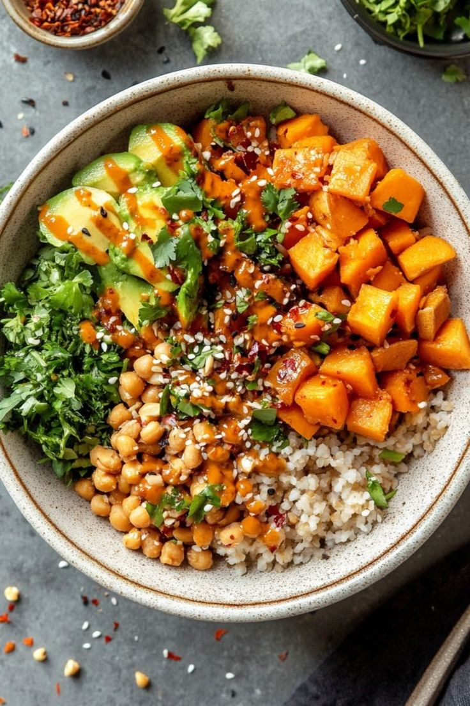

A colorful protein-packed power bowl loaded with crispy grilled satay tofu, steamed broccoli florets, purple cabbage, and roasted sweet potatoes over a fluffy quinoa bed with spicy peanut dressing.

Press firm tofu dry and cut into cubes. Toss with tamari/soy sauce and sesame oil. Pan-sear over medium-high heat for 6–8 minutes until crispy and golden on all sides.
In a bowl, whisk creamy peanut butter, warm water, fresh lime juice, maple syrup, grated ginger, and a splash of sriracha until smooth and pourable.
Steam broccoli florets until bright green and tender-crisp. Shred red cabbage and carrots, and slice fresh Persian cucumbers.
Divide cooked quinoa between bowls. Arrange tofu, broccoli, cabbage, carrots, and sweet potatoes in vibrant sections. Drizzle generously with peanut sauce and crushed peanuts.